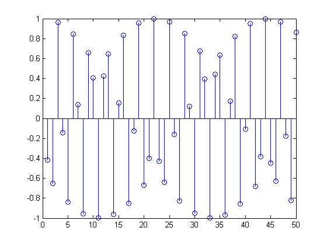

Contents
Taller de Matlab
punto #1
%ezplot((t+2)*pulso(t+1.5,1)+pulso(t,2)+(2-t)*pulso(t-1.5,1),-3:3); xlabel('a');
Utilizando pulsos para definir funciones
Definir func a trozos
%ezplot(cos(2*pi*t)^2)
n =1:50
stem(cos(2*pi*n))
stem(cos(2*n))
n =
Columns 1 through 11
1 2 3 4 5 6 7 8 9 10 11
Columns 12 through 22
12 13 14 15 16 17 18 19 20 21 22
Columns 23 through 33
23 24 25 26 27 28 29 30 31 32 33
Columns 34 through 44
34 35 36 37 38 39 40 41 42 43 44
Columns 45 through 50
45 46 47 48 49 50
